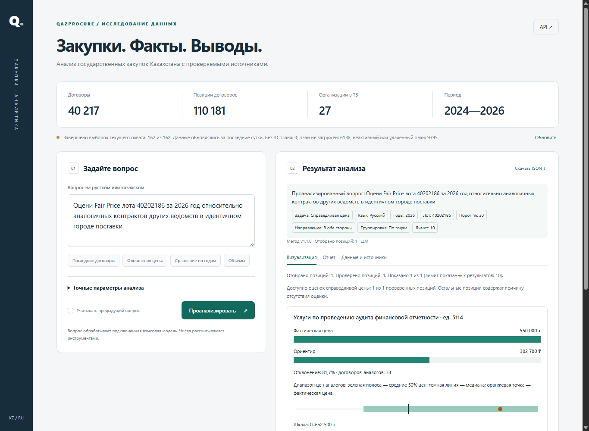
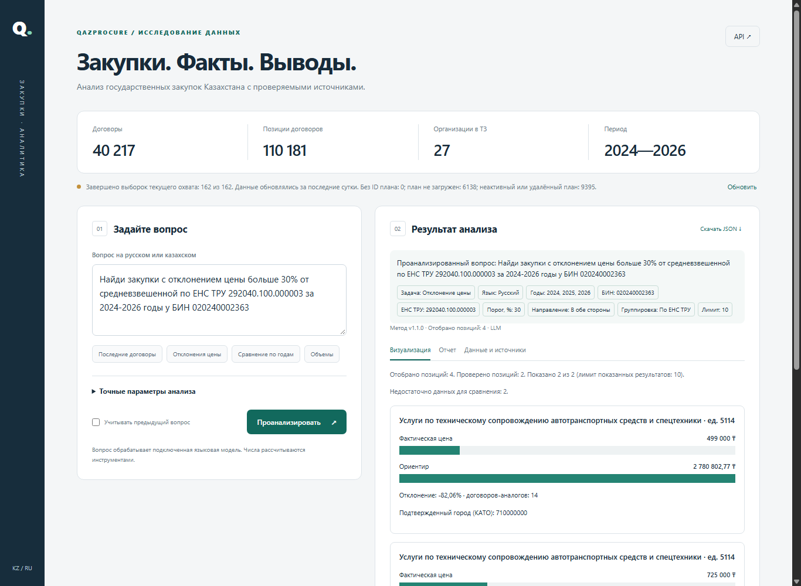
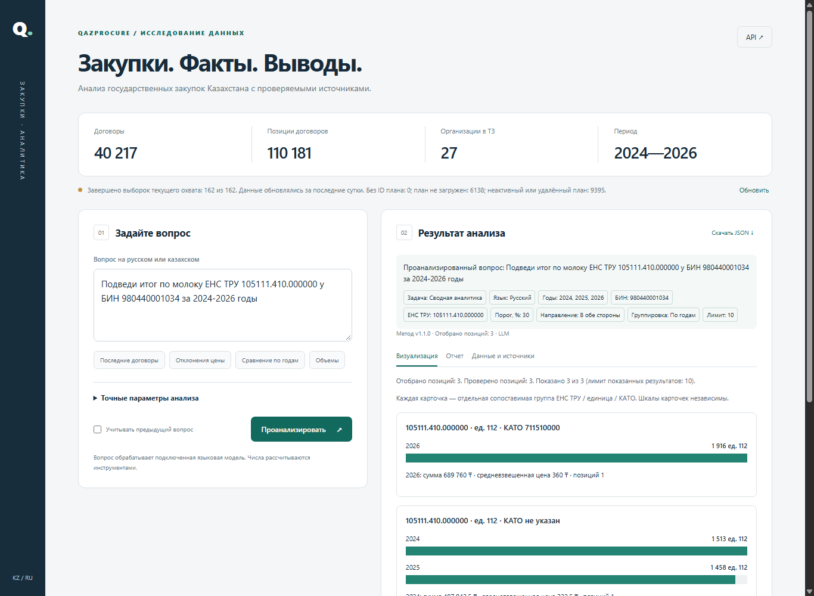
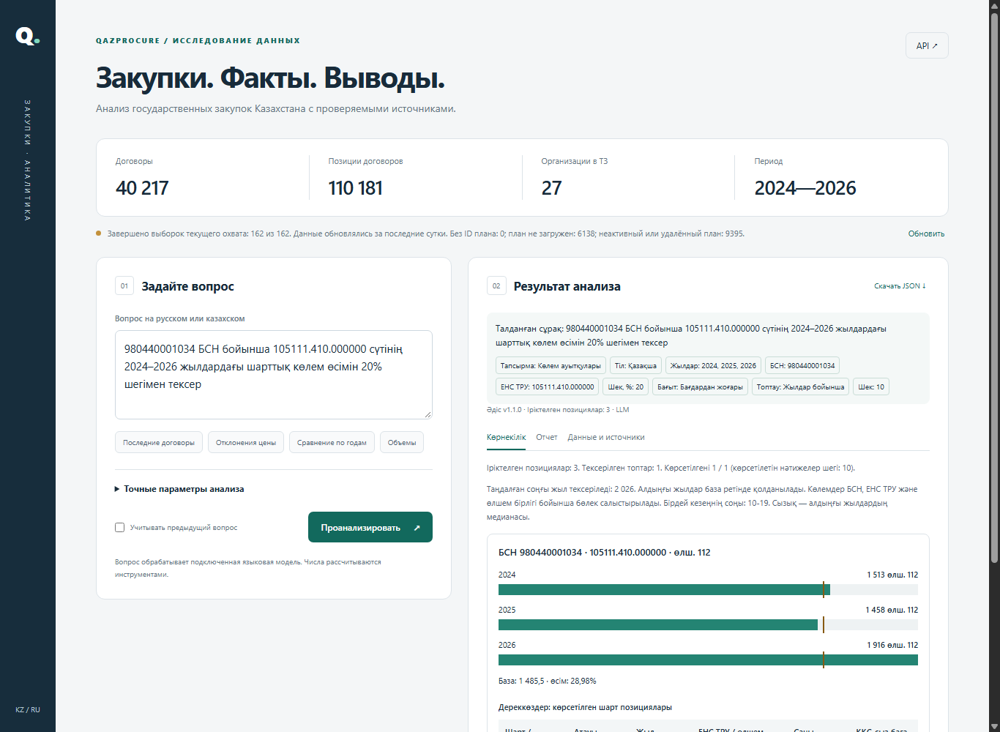

| Проверено | Результат |
|---|---|
| Исправление бага quantity_anomaly (окно даты ломало историю прошлых лет) | Исправлено, 2 регрессионных теста, 77/77 тестов проходят |
| Независимая факт-проверка (20 вопросов RU/KZ, 6 типов intent) | 102/102 факта (100%), все 6 типов intent — оговорка: development acceptance, не слепая внешняя приёмка |
| Актуальность данных (≤24ч от публикации) | freshness_seconds=2504 (~42 минуты), stale=false, backlog 0 незавершённых / 0 с ошибкой |
| Fair Price — рабочий численный пример | fair_price=302 700 ₸, 33 аналога, отклонение +81,7% — см. скриншот №1 |
| Готовность к on-prem (Docker + Kubernetes) | Docker/Compose проверены smoke-тестом; манифесты Kubernetes добавлены (k8s/), собираются kustomize, не применялись на живом кластере |
| Риски и ограничения | Консолидированы в docs/risks.md |
Полный пункт-за-пунктом чек-лист соответствия ТЗ (24 пункта) — в findings.md корневой папки проекта.
Результат: фактическая цена 550 000 ₸, ориентир (медиана 33 аналогов) 302 700 ₸, отклонение +81,7%. Подтверждённый город (КАТО 710000000, Астана). Это реальный, воспроизводимый пример сравнительного подхода из формального определения Fair Price в ТЗ.

Найдено отклонение −82,06% относительно цены аналогов (14 договоров-аналогов), с прямой ссылкой на договор и подтверждённым городом.

Группировка по году/КАТО с суммой, количеством и средневзвешенной ценой по каждой группе — независимо пересчитываемые цифры с источниками.

До исправления этот класс вопросов возвращал «недостаточно данных» для 87% групп из-за ошибки в оконной логике (см. app/analytics.py:quantity_anomaly). После исправления: база 1 485,5, рост 28,98% — корректно найден и отображён в реальном UI на казахском языке.

Документация полностью — docs/architecture.md, docs/methodology.md, docs/risks.md, docs/schema.sql, k8s/. Данный отчёт создан в дополнение к существующему report-with-screenshots.pdf и фиксирует состояние системы и исправления конкретно на 19 октября 2026.